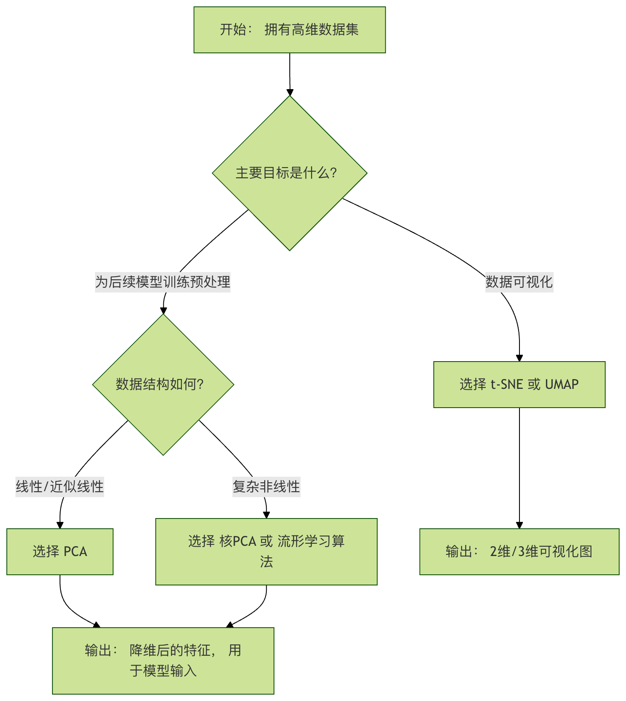

教師なし学習 - 次元削減
想像してみてください。あなたは写真家で、数百万枚の高解像度写真を含むライブラリを整理しているとします。各写真は数百万のピクセル（特徴量）で構成されています。海辺の夕日の写真をすばやく見つけたい場合、各写真のすべてのピクセルを直接比較することはほぼ不可能です。データ量が大きすぎて、あまりにも「太っている」からです。
機械学習では、同様の困難に直面することがよくあります。データセットには何百、何千もの特徴量（次元）があります。これにより、計算速度が極端に遅くなるだけでなく（次元の呪い）、多くの特徴量が冗長または無関係であるために、データ内の真のパターンを見つける妨げになることもあります。
次元削減（Dimensionality Reduction）は、教師なし学習における中核技術の一つであり、データのフィットネストレーナーのように、高次元データを低次元空間にダイエットさせながら、可能な限り重要な情報を保持してくれます。今日は、次元削減についてわかりやすく学んでいきましょう。
次元削減の基本概念
次元削減とは？
簡単に言うと、次元削減とは、データセットの特徴量の数を減らすプロセスです。それは何らかの数学的変換によって、元の高次元空間内のデータ点を、新しくより低い次元の空間にマッピングします。
なぜ次元削減が必要なのか？
次元削減は単にデータを捨てるのではなく、その核心的な価値は次のとおりです：
- 可視化：人間が直感的に理解できるのは最大でも三次元空間までです。2Dや3Dに次元削減することで、高次元データを描画し、その構造、グループ分け、異常点を直感的に観察できます。
- 効率の向上：データの次元が少ないほど、ストレージ容量が小さく、トレーニング速度が速く、計算コストが低くなります。
- ノイズと冗長性の除去：多くのアルゴリズム（特にKNNのような距離計算系アルゴリズム）は、高次元空間では無関係または重複した特徴によって性能が低下します。次元削減はデータの本質を抽出できます。
- 次元の呪いの緩和：高次元空間ではデータが極めて疎になり、多くの機械学習モデルが有効なパターンを見つけにくくなります。
核心的な考え方：情報の保持
次元削減の重要な課題は次のとおりです：次元を減らしながら、元のデータ内の価値ある情報（分散、データ構造など）を最大限に保持するにはどうすればよいか？異なる次元削減アルゴリズムには、それぞれ異なる答えがあります。
主流の次元削減アルゴリズム詳解
次元削減アルゴリズムは主に2つのカテゴリに分けられます：線形次元削減 和 非線形次元削減。
線形次元削減：主成分分析
主成分分析（PCA）は、最も古典的で最も一般的に使われる線形次元削減法です。その目標は、データに対して新しい座標軸（「主成分」と呼ばれる）のセットを見つけ、データがこれらの新しい軸上で投影されたときの分散が最大になるようにすることです。
PCAの動作原理（4つのステップ）：
- 中心化：各特徴量からその平均値を引き、データ分布の中心を座標原点に移動させます。
- 共分散行列の計算：この行列は、データの各特徴量間の相関を記述します。
- 固有値分解：共分散行列の固有値と固有ベクトルを計算します。固有ベクトルは新しい座標軸（主成分）の方向を示し、固有値はその方向におけるデータの分散の大きさを表します。固有値が大きいほど、その方向に含まれる情報が多くなります。
- 主成分の選択：固有値を大きい順に並べ、上位
k個の最大固有値に対応する固有ベクトルを選択し、射影行列を構成します。 - データ変換：元のデータにこの射影行列を掛けると、次元削減された
k次元の新しいデータが得られます。
実例
import numpy as np
import matplotlib.pyplot as plt
from sklearn.decomposition import PCA
from sklearn.datasets import load_iris
# -------------------------- 中国語フォントの設定 start --------------------------
plt.rcParams['font.sans-serif'] = [
# Windows 優先
'SimHei', 'Microsoft YaHei',
# macOS 優先
'PingFang SC', 'Heiti TC',
# Linux 優先
'WenQuanYi Micro Hei', 'DejaVu Sans'
]
# 負号が四角形に表示される問題を修正
plt.rcParams['axes.unicode_minus'] = False
# -------------------------- 中国語フォントの設定 end --------------------------
# 1. 古典的なアヤメデータセットを読み込む（4つの特徴量）
iris = load_iris()
X = iris.data # 元データ：150サンプル、4つの特徴量
y = iris.target # ラベル、可視化の色分けに使用
print(f"元データの形状: {X.shape}") # 出力: (150, 4)
# 2. PCAモデルを作成し、2次元への次元削減を指定
pca = PCA(n_components=2)
# 3. モデルを適合（主成分を計算）し、データを変換
X_pca = pca.fit_transform(X)
print(f"次元削減後のデータ形状: {X_pca.shape}") # 出力: (150, 2)
print(f"各主成分が説明する分散の割合: {pca.explained_variance_ratio_}")
# 出力例: [0.9246, 0.0530] は、第一主成分が92.5%の情報を保持し、第二主成分が5.3%を保持することを示す
# 4. 次元削減の結果を可視化
plt.figure(figsize=(8, 6))
scatter = plt.scatter(X_pca[:, 0], X_pca[:, 1], c=y, edgecolor='k', alpha=0.7)
plt.xlabel('第一主成分 (PC1)')
plt.ylabel('第二主成分 (PC2)')
plt.title('PCA: アヤメデータセットの次元削減可視化')
plt.colorbar(scatter, label='アヤメの種類')
plt.grid(True, linestyle='--', alpha=0.5)
plt.show()
コード解説：
PCA(n_components=2)：モデルを初期化し、n_componentsパラメータは保持する主成分の数（つまり次元削減後の次元）を指定します。fit_transform(X)：これは組み合わせメソッドであり、最初にデータの平均と主成分方向を計算し（fit）、その後すぐにデータを新しい空間に変換します（transform）。explained_variance_ratio_：これはPCAの非常に重要な属性であり、各新特徴量（主成分）が元のデータのどれだけの分散（情報量）を保持しているかを示します。これにより、主成分をいくつ選択するのが適切かを判断できます。

PCAの長所と短所
- 長所：計算効率が高く、原理が明確で、線形相関を効果的に除去できます。
- 短所：これは線形手法であり、データの主成分が線形であることを前提としています。「スイスロール」のような非線形多様体データに対しては、PCAは効果が良くありません。
非線形次元削減：t-SNE
データが複雑な非線形構造を持つ場合、非線形次元削減法が必要になります。t-分布確率的近傍埋め込み（t-SNE）は、現在最も人気のある可視化指向の非線形次元削減アルゴリズムです。
t-SNEの核心的な考え方
t-SNEはデータの局所構造の保持に焦点を当てています。高次元空間で「類似している」（距離が近い）点は低次元のマッピングでも「類似」し、高次元で「類似していない」点は低次元では遠ざかるように試みます。
実例
import numpy as np
import matplotlib.pyplot as plt
from sklearn.decomposition import PCA
from sklearn.manifold import TSNE
from sklearn.datasets import make_swiss_roll # スイスロールデータを生成
# -------------------------- 中国語フォントの設定 start --------------------------
plt.rcParams['font.sans-serif'] = [
# Windows 優先
'SimHei', 'Microsoft YaHei',
# macOS 優先
'PingFang SC', 'Heiti TC',
# Linux 優先
'WenQuanYi Micro Hei', 'DejaVu Sans'
]
# 負号が四角形に表示される問題を修正
plt.rcParams['axes.unicode_minus'] = False
# -------------------------- 中国語フォントの設定 end --------------------------
# 1. 非線形データセットを生成：スイスロール
X_swiss, color = make_swiss_roll(n_samples=1000, noise=0.1)
print(f"スイスロールデータの形状: {X_swiss.shape}") # (1000, 3)
# 2. PCA（線形手法）を使用して次元削減を試みる
pca = PCA(n_components=2)
X_swiss_pca = pca.fit_transform(X_swiss)
# 3. t-SNE（非線形手法）を使用して次元削減
# perplexity（パープレキシティ）はt-SNEの主要パラメータで、通常5から50の間で、局所/全体構造へのバランスのとれた注意を表します
tsne = TSNE(n_components=2, perplexity=30, random_state=42)
X_swiss_tsne = tsne.fit_transform(X_swiss)
# 4. 比較可視化
fig, axes = plt.subplots(1, 2, figsize=(15, 6))
# PCAの結果
axes[0].scatter(X_swiss_pca[:, 0], X_swiss_pca[:, 1], c=color, cmap='viridis')
axes[0].set_title('PCA次元削減結果')
axes[0].set_xlabel('PC1')
axes[0].set_ylabel('PC2')
# t-SNEの結果
sc = axes[1].scatter(X_swiss_tsne[:, 0], X_swiss_tsne[:, 1], c=color, cmap='viridis')
axes[1].set_title('t-SNE次元削減結果 (perplexity=30)')
axes[1].set_xlabel('t-SNE 1')
axes[1].set_ylabel('t-SNE 2')
plt.colorbar(sc, ax=axes[1], label='スイスロールの「高さ」')
plt.tight_layout()
plt.show()
コード解読：
perplexityパラメータ：各点に対して何個の近傍を考慮するかと理解できる。値が小さいと局所構造により注目し、値が大きいと大域構造により注目する。これはt-SNEで最も重要な調整パラメータである。random_state：結果の再現性を確保する。t-SNEの最適化プロセスはランダムだからである。- 可視化結果から明確にわかるように、PCAはスイスロールを「押しつぶして」しまい、非線形の巻き構造を失っている。一方t-SNEは2次元平面上でこの巻きをより良く展開し、データの局所的な隣接関係を保持している。

t-SNEの長所と短所
長所：複雑な非線形データの可視化に非常に優れ、クラスタ構造を明確に示すことができる。
短所：
- 計算速度が遅い、大規模データセットには不向きである。
- 結果にはランダム性があり、実行ごとに結果が少し異なる場合がある。
- ハイパーパラメータに敏感，
perplexity調整が必要である。 - 主に可視化（2D/3D）に使用される（2D/3D）に使用され、次元削減後の特徴量は通常、その後の機械学習タスクには使用されない。低次元空間での距離の意味が変わってしまうためである。
次元削減方法と主要パラメータの選び方
アルゴリズム選択フローチャート

主要パラメータガイド
PCA: n_components
- 整数（例：2）に設定でき、具体的な次元数を指定できる。
- 設定できるのは、
0 < n < 1の小数（例：0.95）で、累積分散寄与率がそのしきい値に達するために必要な最小の主成分数を表す。
実例
pca = PCA(n_components=0.95)
pca.fit(X)
print(f"95%の分散を保持するには、{pca.n_components_} 個の主成分が必要です")
t-SNE: perplexity
- 典型的な値は5から50の間である。
- 小規模データセット（<100サンプル）の場合は、より小さい値を推奨する。
- 最適な値は通常、データ内の各点の「近傍」数に近い。可視化効果を実験で確認しながら選択する必要がある。
実践演習とまとめ
実践演習：MNIST手書き数字データセットに次元削減を適用する
実例
from sklearn.preprocessing import StandardScaler
# 1. MNISTデータセットを読み込む（速度向上のため一部のサンプルのみ使用）
mnist = fetch_openml('mnist_784', version=1, as_frame=False)
X_mnist, y_mnist = mnist.data[:3000] / 255.0, mnist.target[:3000] # 正規化し、最初の3000サンプルを取得
print(f"MNISTデータ形状: {X_mnist.shape}") # (3000, 784) -> 784次元！
# 2. まずPCAで50次元まで高速に削減し、大量のノイズを除去
pca = PCA(n_components=50)
X_mnist_pca = pca.fit_transform(X_mnist)
print(f"PCA後の形状: {X_mnist_pca.shape}")
# 3. 次にt-SNEで50次元データを2次元に削減して可視化
tsne = TSNE(n_components=2, perplexity=40, n_iter=300, random_state=42)
X_mnist_tsne = tsne.fit_transform(X_mnist_pca)
# 4. 可視化
plt.figure(figsize=(10, 8))
scatter = plt.scatter(X_mnist_tsne[:, 0], X_mnist_tsne[:, 1],
c=y_mnist.astype(int), cmap='tab10', alpha=0.6, s=5)
plt.colorbar(scatter, ticks=range(10), label='手書き数字')
plt.title('MNIST手書き数字データセットのPCA前処理後のt-SNE可視化')
plt.xlabel('t-SNE 1')
plt.ylabel('t-SNE 2')
plt.grid(True, linestyle='--', alpha=0.3)
plt.show()
演習の目標：異なる数字（0-9）が2次元平面上で明確なクラスタを形成しているかを観察する。以下のperplexityパラメータ（例：10や50に変更）を修正して、可視化結果がどう変わるか確認する。
まとめと核心ポイント
次元削減の本質：情報の圧縮と抽出であり、単にデータを捨てることではない。目標は、より少ない次元でできるだけ多くの元の情報を表現することである。。
PCA（線形の王者）：分散の最大化を通じてデータの最主要的な線形方向を見つける。効率的で安定しており、前処理や線形相関の除去に適している。
t-SNE（可視化の利器）：データ点間の局所的類似性を保つことで非線形構造を明らかにする。効果は驚くべきものだが、計算が遅く、結果がランダムであり、主に探索的データ分析に使用される。
ワークフロー：
- 目標を明確にする：可視化のためか、それとも下流モデルにより精錬された特徴量を入力するためか？
- データ探索：まず一部のデータを可視化し、その線形性/非線形性について初期の感触を得る。
- 手法の実験：目標とデータ構造に基づいてアルゴリズムを選択し、主要パラメータを調整する。
- 結果の評価：可視化、情報保持率、または下流タスクの性能を通じて次元削減の効果を評価する。
次元削減は、高次元データのブラックボックスを開くための重要な鍵である。
PCA と t-SNE を習得すれば、複雑なデータに直面したときに、全体構造を俯瞰できるだけでなく、その後の機械学習モデルのために精選された特徴量を準備でき、データ分析の効率と深さを大幅に向上させることができる。
その他の拡張
クリックしてノートを共有
<p style="font-size:14px;">ノートはこの記事の内容の拡張である必要があります！</p><br> <p style="font-size:12px;"><a href="../tougao.html" target="_blank">記事投稿は、ここをクリックしてください</a></p> <p style="font-size:14px;"><a href="../w3cnote/runoob-user-test-intro.html" target="_blank">登録招待コードの入手方法</a></p> <h3 class="text-muted"><i class="fa fa-info-circle" aria-hidden="true"></i> ノートを共有する前に必ず<a href=";.html" class="runoob-pop">ログイン</a>！</h3> <p><a href="../w3cnote/runoob-user-test-intro.html" target="_blank">登録招待コードの入手方法</a></p>